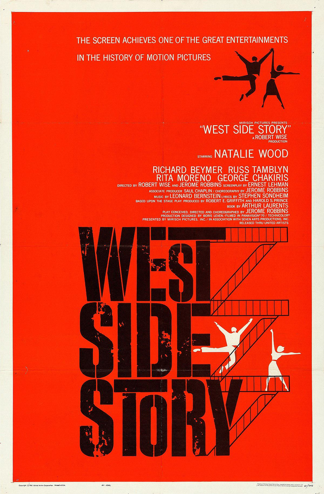

西区故事
一句话短评：
内容简介：
- 曼哈顿西部贫民区里有两帮势不两立的流氓团伙，一个是由白人里弗领导的“火箭”帮，另一个是由波多黎各人贝尔纳尔多带头的“鲨鱼”帮。两帮相互仇视，经常斗殴生事。一次西区举行舞会，两个帮派相互拼舞，里弗的朋友托尼（理查德·贝梅尔 Richard Beymer 饰）与贝尔纳尔多的妹妹玛丽亚（娜塔利·伍德 Natalie Wood 饰）一见钟情。贝尔纳尔多发现两人的爱慕后，强行让手下带走了妹妹。夜里，托尼站在玛丽亚的窗前呼唤她，两人坚定地相爱了。第二天，玛丽亚听说“鲨鱼帮”将和“火箭帮”决斗，便让托尼前去阻止。托尼匆匆赶到现场，试图阻止斗殴的发生，在混乱中好友里弗被杀，他出于自卫失手杀死贝尔纳尔多。这让玛丽亚陷入矛盾和痛苦中，她忍受着家人的责骂与侮辱，但心中无法放下托尼。贝尔纳尔多的好友持枪寻找托尼算帐，得知消息的玛丽亚匆匆赶去报信，然而悲剧赶在她之前发生了……
短评：
- 1.流光溢彩，沉郁悲怆，好几段歌舞看得人下巴都掉了，可看性和批判性上都是“神片”一样的存在。 ——哪吒男
- 2.现代歌舞版的罗密欧与朱丽叶，演员非常出色，从音乐剧改编为电影后，舞台表现力和戏剧张力依旧强大，即使知道最终的故事走向也还是对黑色的结尾唏嘘不已。 ——touya
可播放资源：
- 哔哩哔哩 免费观看
- https://www.bilibili.com/bangumi/play/ss38356?bsource=douban